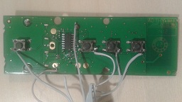

Project Target
This project is about electrically controlled roller shutters and motorized blinds. These are controlled with the Somfy RTS RF remote control system. In summer time, I like to automatically control the blinds such that they close if significant sun light would come insight and open again if direct sun light is over again. Since the blinds are located at different angles on different sides of the house I need individual control of the blinds, depending on their position. Also I want to maximize the opening time to have it as bright as possible insight. However, if the sun shines directly into a window the blind must be down to avoid overheating of the house. As a result, each blind shall only close if the sun has an angle for direct radiation. Further more, the blind should also not close if the sky is cloudy and no direct sun light prevails.
Possible solutions
How to control the blinds The following alternatives were considered by me:
1. Use Somfy Timer Unit
Somfy offers a timer control for their systems such as Chronis Comfort RTS Timer. You can program a specific time for opening and closing of the blinds. This time can also depend on sunrise and sunset. But this is limited to +/- 1 hour around sunrise and sunset and therefore only hardly suitable.
Advantages
- easy to implement: just by the unit and program it
Disadvantages
- only 1 channel per timer, which means that I need several units for individual control of the blinds
- not possible to automatically change control based on cloudy weather condition or temperatures
- not possible to automatically adapt it to changing sun position
2. Somfy Universial RTS Interface
Somfy offers a universal interface, which provides a RS485 communication interface. It is able to serve multiple channels so each blind could be controlled individually.
Advantages
- available HW unit, only software development necessary
- full flexibility with regard to automation
Disadvantages
- from my perspective the interface is much too expensive. It seems that Somfy wants to inhibit such applications. Also on the product description Somfy mentions that there is no support for this interface product at all.
- the serial interface seems outdated to me. I prefer an ethernet connection such that I do not need a computer locally attached and running 24 hours per day.
3. Build my own Interface
The Somfy Telis 4 RTS is available for reasonable budget and offers 5 channels. If the button contact can be closed by some software controlled unit with ethernet interface I have all I need. This can easily be done using a Raspberry Pi.
Advantages
- full flexibility
- low price
Disadvantages
- more development effort needed, including hardware adaptations
I chose to go for solution 3, which I will outline in more detail below.
Hardware Setup
The Somfy Telis 5 RTS provides the interface to the radio signal. I use this unit as it is and just solder wires to the button lines to control them automatically. The buttons seem to be connected to pull up resistors and close contact to ground if pressed. Therefore, I soldered wires to each button and the GND connection:

These wires are connected to the GPIO interface of a Raspberry Pi. To simulate a button press, the GPIO pin of the RPi is set to zero, to release the button again the GPIO pin is set to high impedance state (thus reconfigured as input).
As a result, the wiring is like this:
- Telis Buttons <-> RPi GPIOs
- ...
- Telis Battery - <-> RPi GND
- Telis Battery + <-> RPi 3.3 V
Refer to the Excel sheet in the git documentation directory for concrete pin numbering.
Notice that the Somfy Telis remote is powered by the Raspberry Pi. Its battery is removed and the contacts are connected to the 3.3 V supply of the RPi. There are 2 good places to put the supply wires on, with holes where they can easily be soldered.
The total setup including the Raspberry Pi is shown here:
Finally I attached 2 Telis remotes to increase the number of contrallable channels to 10. The RPi provides enough GPIOs such that you could also operate 3 remotes.
For your reference: I found a similar approach in the OpenRemote project in this article:
How To - Control Sunshades - Somfy-Telis with Raspberry Pi
This project uses an opto coupler, which is connected between the Telis remote and the Raspberry Pi. I do not see a reason for this as the RPi uses the same voltage range as the Telis remote and a galvanic separation does not seem necessary to me. This simplifies my hardware setup such that no component is needed beside the RPi and the Somfy Telis remote. Also, you do not need to worry about the remote's battery anymore since this is removed and supplied by the Raspberry Pi, too.
Software
The software is developed in Python and consists of several independent software components, which are outlined below.
Weather Data Retrieval
This component determines the outside temperature and the probability of sun shine in near future. You need some weather service to provide this data. Normally you should be able to find some public web side to access for current temperature and sun minutes per hour at your location. I was lucky and my local meteorological institute offered me also forecast data, which I receive regularly in CSV format per email.
Thus I developed a Python script that retrieves the email from my personal email account and parses the weather data. The extracted sun shine probability and the outside temperature is then stored to an OPC server. This storage to an OPC XML-DA server is mainly caused by historical reason because I have such system available (Loytec LINX 120). Additionally it is also stored to a file so you do not need the extra HW to run the system. Look at the zamg component in the git repository for this functionality.
Window Power Calculation
This component derives the power of the sun as perceived for each individual window. It derives the current position of the sun on horizon (azimuth, altitude) and the angle of the sun light to each window. Based on this angle it derives the effective sun power for each window. Again, this is stored using an OPC datapoint and additionally into a file. Look at the sunpower component in the git repository for this functionality.
Command Control
This component derives the up and down commands for the blinds. It compares the sun power from weather service and the effective radiation angle from each window with threshold parameters. If the threshold is reached the desired state of the window is set to closed.
Remote Control Driver
This component reads the desired switching status from the OPC data point or file storage and compares it with the current status, which is read from a file. If the status differs it triggers the command on the Telis remote. For this it needs to switch to the corresponding RF channel and issue the open or close command afterwards. Finally it switches the RF channel back to channel 0. The driver also makes sure that all blinds are operated sequentially even if the status changes simultanuous. This is necessary because the single Telis remote control can just operate on the currently selected channel.
Multiple commands on the same remote are scheduled in ordered sequence to optimize channel switching delays. If multiple remotes are used they are handled in different concurrent threads such that also this timing gets optimized. The remote component in the git repository covers this functionality.